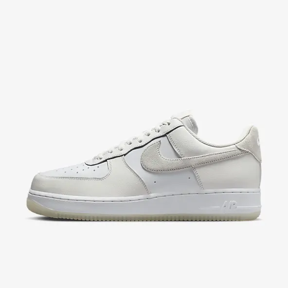

Sustainable Materials
Nike V2K Run
Shoes
₱6,895

Add to Bag
Favourite
This product is excluded from site promotions and discounts.
This product is made with at least 20% recycled content by weight.
Fast forward. Rewind. Doesn't matter—this shoe takes retro into the future. The V2K remasters everything you love about the Vomero in a look pulled straight from an early '00s running catalogue. Layer up in a mixture of flashy metallics, referential plastic details and a midsole with a perfectly vintage aesthetic. And the chunky heel makes sure wherever you go, it's in comfort.
- Colour Shown: White/Photon Dust/Summit White/Platinum Tint
- Style: FD0736-102
Free Delivery and Returns

Your order of ₱7,500 or more gets free standard delivery.
- Standard delivered 5-9 Business Days
- Express delivered 2-4 Business Days
Orders are processed and delivered Monday-Friday (excluding public holidays).
Nike members enjoy free returns. Exclusions apply.
How This Was Made
- This product was responsibly designed utilising recycled materials from post-consumer and/or post-manufactured waste. One of our biggest steps on our journey to zero carbon and zero waste is in choosing our materials because they account for more than 70% of any product's footprint. By reusing existing plastics, yarns and textiles, we significantly reduce our emissions. Our goal is to use as many recycled materials as possible without compromising on performance, durability and style.
- Learn more about our Move to Zero journey towards zero carbon and zero waste, including how we're working to design product with sustainability in mind and help protect the future of where we live and play.
Reviews
- This product was responsibly designed utilising recycled materials from post-consumer and/or post-manufactured waste. One of our biggest steps on our journey to zero carbon and zero waste is in choosing our materials because they account for more than 70% of any product's footprint. By reusing existing plastics, yarns and textiles, we significantly reduce our emissions. Our goal is to use as many recycled materials as possible without compromising on performance, durability and style.
- Learn more about our Move to Zero journey towards zero carbon and zero waste, including how we're working to design product with sustainability in mind and help protect the future of where we live and play.